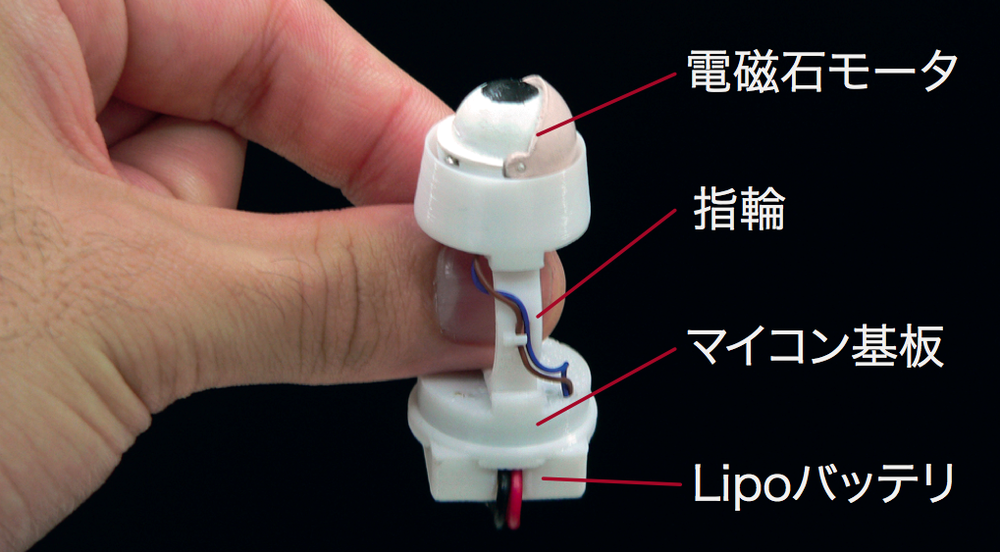

情報処理推進機構(IPA)では、2000年より
「未踏ソフトウェア創造事業」という人材発掘事業を実施しており、
様々な開発者の個人的なソフトウェアプロジェクトの支援を行なってきました。
この活動によって数多くのソフトウェアが開発され、人材交流が行なわれてきましたが、
最近は若干事業の方向性が変わり、
25歳以下の開発者を対象とした
「未踏IT人材育成発掘・育成事業」
が継続しています。
従来の未踏事業ではソフトウェアの開発に主眼が置かれていましたが、
近年はハードウェアも含めた広い範囲において
有能な若い人材を育成する事業になっています。
国家的なIT支援事業は様々なものがありますが、
未踏事業は個人を対象としており自由度が高いのが特徴です。
2011年度の未踏事業では21件のプロジェクトが採択され、
8月4〜5日に成果発表会が開催されました[1]。
新しいプログラミング言語の開発や新しいWebサービスの開発といった
ソフトウェア開発プロジェクトもありましたが、
様々なハードウェアのプロトタイプとソフトウェアを組み合わせたプロジェクトも多く、
バラエティに富んだ成果が得られました。
今回は、2011年度のプロジェクトのうち、
ハードウェアの試作を含んだプロジェクトをいくつか紹介します。
広場に大きな絵を描く
香川工専の春日貴章氏らは、
グラウンドに線を低くための石灰を撒きながら移動する台車を
リモート操作することによって
「ナスカの地上絵」のような大きな絵を描く
「フィールドペインタ」というシステムを開発しました。
4台のホイールモータを搭載した下図のような台車の周囲に
巨大なQRコードを貼り付け、遠くのカメラから認識することにより
台車位置を認識し、
適切な指令を出すことによって大きな絵を描くというものです。

石灰を撒きながら走る台車
電子回路を校庭に描いたところ
電動バイクが普及したためホイールモータは数万円で入手することができるそうで、
大きな台車が高速に走って校庭に絵を描く様子は壮観でした。
水泳上達を支援する水中ロボット
東京大学の鵜飼佑氏は、
水泳する人と同じ速さで水中を走ることによって
泳ぎのフォームの問題を指摘したりする「伴泳ロボット」を開発しました。
様々なスポーツにおいて、
自分がどういうフォームになっているかを確認することは重要なので
ビデオで撮影したり
鏡を使って自分のフォームを確認したりする練習法が利用されていますが、
水泳の場合はビデオや鏡を使うことが難しいため、
フォームを見たり改善点を指摘したりすることは困難でした。
東京大学生産技術研究所海中工学国際研究センターの
浦研究室が開発した
「YebisURA(えびすら)」という水中ロボットに
センサやディスプレイを搭載した装置を開発することにより、
水泳の練習を支援する伴泳ロボットを開発することができました。
伴泳ロボットの様子
空中写真を撮るボール
東京大学の竹岡英樹氏は、
高速カメラを6個を内蔵したボールを投げることによって
ボール視点で周囲の全周動画を撮影することができる
「TossCam」というシステムを開発しました。
投げたボールが飛んでいくとき、
6個のカメラを使って全方向の影像を撮影することができるため、
普通のカメラでは撮影することができない
面白い影像をとることが可能になっています。
TossCam
指輪ロボット
慶應義塾大学の尾形正泰氏は、
超小型のArduinoとモータを利用して
目玉が開閉するような「指輪ロボット」を開発しました。
指に装着した目玉が動くと様々な感情を感じることができるので
新しいコミュニケーションが可能になります。

指輪ロボットの構成
指輪ロボットを指に装着
このために開発した超小型の円板型Arduinoは
単体で販売する予定もあるそうです。
動く植木鉢
お茶の水女子大の福地あゆみ氏は、
植木鉢に台車を取り付けて自由に動けるようにすることにより、
日当たりなどの状況によって植木鉢が移動したり、
動く植木鉢とペットのように交流したりすることができる
「PotPet」というシステムを開発しました。
植物は普通は無言で動かないものですが、
台車をつけて動けるようにしたり
センサによって現在の状況を検出したりできるようにすることによって
植物との新しいコミュニケーションが可能になっています。
PotPet
Open Design CPU
筑波大学の伊藤剛浩氏と川田裕貴氏は
全く新しいプロセッサ「MIST32」を設計してFPGA上に実装したうえに、
言語処理系の開発も行なって
オープンソースで公開するというプロジェクトを展開しています。
CPUを作ったりそのコンパイラを作ったりすることは
それだけで大変なことですが、
若いにもかかわらずこのような野心的な試みに挑戦していることに感心しました。
MIST32の位置づけ
未踏の採択者は全員が25歳以下であるにもかかわらず
今回紹介したような様々な興味深いプロジェクトを
実際に成功に導いたのは脅威的なことだと思います。
現在はインターネット上のサービスが世間で最も注目を集めているようですが
ハードウェアとソフトウェアを適切に組み合わせることによって、
全く新しい世界を模索できるようになってきていることも間違いありません。
先進的な開発環境を駆使する若者達によって
新しい地平が広がることを期待したいと思います。
[1] http://www.ipa.go.jp/jinzai/mitou/2011/2011_1/seikahoukokukai/index.html